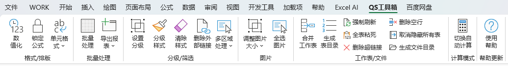
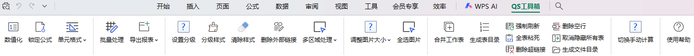

🚀 QSBar 插件更新说明
感谢您使用 QSBar！本次更新已成功安装。
当前版本：1.0.0.5
✨ 本次更新重点：
修复了安装包在其他电脑上因卸载程序丢失导致的“自动卸载失败”问题。
优化了安装路径选择，默认使用系统自动识别的 Program Files 目录，解决无 D 盘无法安装的问题。
修正了安装包版本号未自动同步的问题，现在安装包版本与插件版本完全一致。
解决了安装后 Ribbon 工具栏不显示的问题，优化了 COM 组件注册逻辑。
🖥️ 界面预览：
Excel 界面效果：

WPS 界面效果：
